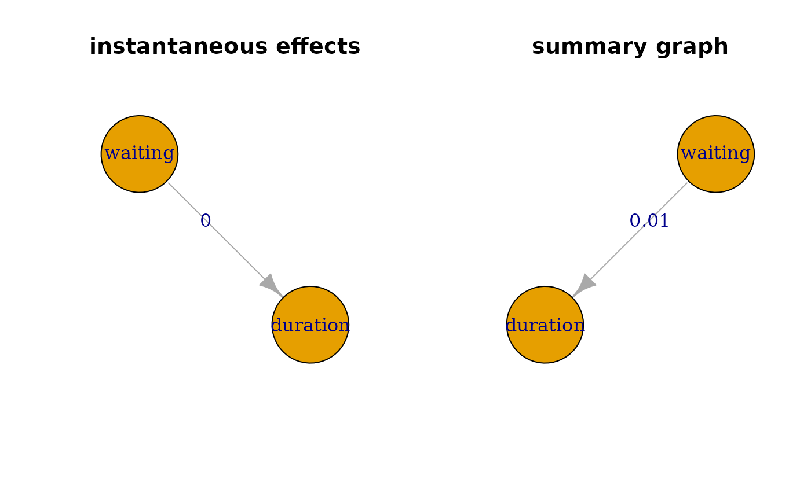

Ancestor Regression
AncReg.RdThis function performs ancestor regression for linear structural equation models (Schultheiss et al. 2024) and vector autoregressive models (Schultheiss and Bühlmann 2023) with explicit error control for false discovery, at least asymptomatically.
Usage
AncReg(x, degree = 0, targets = colnames(x), f = function(x) x^3)Arguments
- x
A named numeric matrix containing the observational data.
- degree
An integer specifying the order of the SVAR process to be considered. Default is 0 for no time series.
- targets
A character vector specifying the variables whose ancestors should be estimated. Default is all variables.
- f
A function specifying the non-linearity used in the ancestor regression. Default is a cubic function.
Value
An object of class "AncReg" containing:
- z.val
A numeric matrix of test statistics.
- p.val
A numeric matrix of p-values.
References
Schultheiss C, Bühlmann P (2023).
“Ancestor regression in linear structural equation models.”
Biometrika, 110(4), 1117-1124.
ISSN 1464-3510, doi:10.1093/biomet/asad008
, https://academic.oup.com/biomet/article-pdf/110/4/1117/53472115/asad008.pdf.
Schultheiss C, Ulmer M, Bühlmann P (2024).
“Ancestor regression in structural vector autoregressive models.”
2403.03778, https://arxiv.org/abs/2403.03778.
Examples
##### simulated example for inear structural equation models
# random DAGS for simulation
set.seed(1234)
p <- 5 #number of nodes
DAG <- pcalg::randomDAG(p, prob = 0.5)
B <- matrix(0, p, p) # represent DAG as matrix
for (i in 2:p){
for(j in 1:(i-1)){
# store edge weights
B[i,j] <- max(0, DAG@edgeData@data[[paste(j,"|",i, sep="")]]$weight)
}
}
colnames(B) <- rownames(B) <- LETTERS[1:p]
# solution in terms of noise
Bprime <- MASS::ginv(diag(p) - B)
n <- 5000
N <- matrix(rexp(n * p), ncol = p)
X <- t(Bprime %*% t(N))
colnames(X) <- LETTERS[1:p]
# fit ancestor regression
fit <- AncReg(X)
#> Registered S3 method overwritten by 'quantmod':
#> method from
#> as.zoo.data.frame zoo
# collect ancestral p-values and graph
res <- summary(fit)
res
#> $p.val
#> A B C D E
#> A 1.000000e+00 4.651060e-01 8.724085e-01 6.022472e-02 0.88321535
#> B 1.749755e-01 1.000000e+00 2.413209e-01 9.401252e-01 0.06325044
#> C 8.289132e-01 3.259650e-06 1.000000e+00 2.958733e-01 0.43794278
#> D 6.051335e-01 5.089227e-30 4.945655e-01 1.000000e+00 0.15173540
#> E 7.633085e-20 6.462766e-01 5.580378e-18 8.617029e-17 1.00000000
#>
#> $graph
#> A B C D E
#> A FALSE FALSE FALSE FALSE FALSE
#> B FALSE FALSE FALSE FALSE FALSE
#> C FALSE TRUE FALSE FALSE FALSE
#> D FALSE TRUE FALSE FALSE FALSE
#> E TRUE TRUE TRUE TRUE FALSE
#>
#> $alpha
#> [1] 0.05
#>
#> attr(,"class")
#> [1] "summary.AncReg"
#compare true and estimated ancestral graph
trueGraph <- igraph::graph_from_adjacency_matrix(recAncestor(B != 0))
ancGraph <- igraph::graph_from_adjacency_matrix(res$graph)
par(mfrow = c(1, 2))
plot(trueGraph, main = 'true ancestral graph', vertex.size = 30)
plot(ancGraph, main = 'Ancestor Regression', vertex.size = 30)
##### SVAR-example with geyser timeseries
geyser <- MASS::geyser
# shift waiting such that it is waiting after erruption
geyser2 <- data.frame(waiting = geyser$waiting[-1], duration = geyser$duration[-nrow(geyser)])
# fit ancestor regression with 6 lags considered
fit2 <- AncReg(as.matrix(geyser2), degree = 6)
res2 <- summary(fit2)
res2
#> $inst.p.val
#> waiting duration
#> waiting 1.0000000 0.0004811719
#> duration 0.5109396 1.0000000000
#>
#> $inst.graph
#> waiting duration
#> waiting FALSE TRUE
#> duration FALSE FALSE
#>
#> $inst.alpha
#> [1] 0.05
#>
#> $sum.p.val
#> waiting duration
#> waiting 1.0000000 0.008733271
#> duration 0.1760936 1.000000000
#>
#> $sum.graph
#> waiting duration
#> waiting FALSE TRUE
#> duration FALSE FALSE
#>
#> attr(,"class")
#> [1] "summary.AncReg"
# visualize instantaneous ancestry
instGraph <- igraph::graph_from_adjacency_matrix(res2$inst.graph)
plot(instGraph, edge.label = round(diag(res2$inst.p.val[1:2, 2:1]), 2),
main = 'instantaneous effects', vertex.size = 90)
# visualize summary of lagged ancestry
sumGraph <- igraph::graph_from_adjacency_matrix(res2$sum.graph)
plot(sumGraph, edge.label = round(diag(res2$sum.p.val[1:2, 2:1]), 2),
main = 'summary graph', vertex.size = 90)
